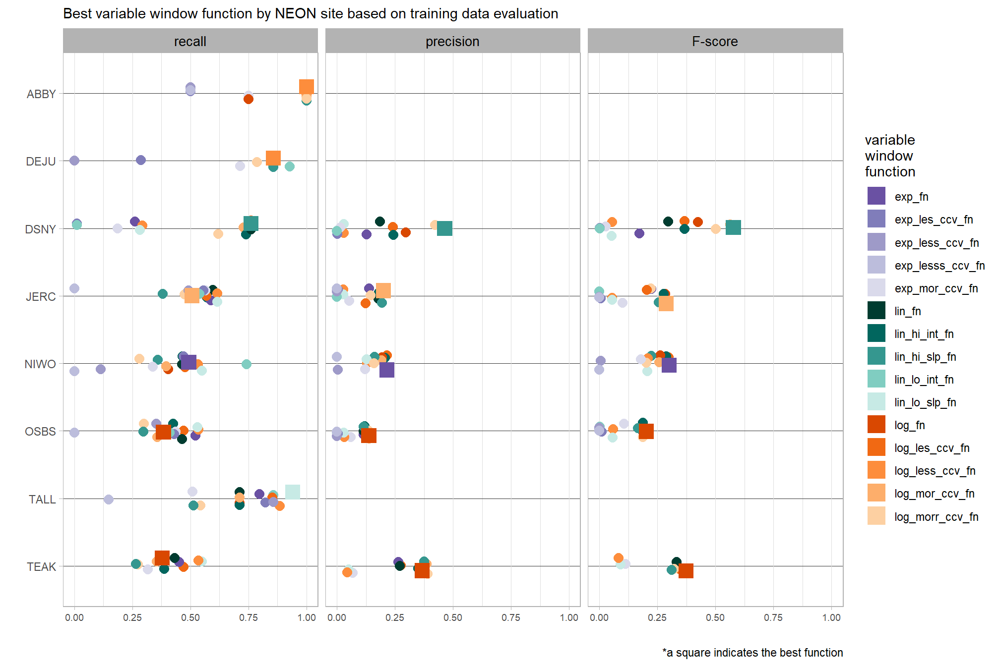
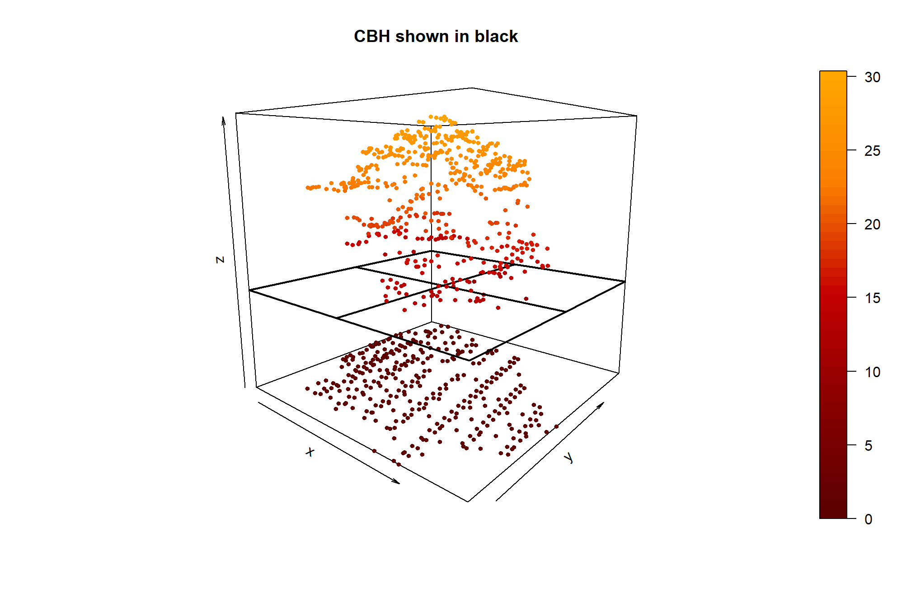
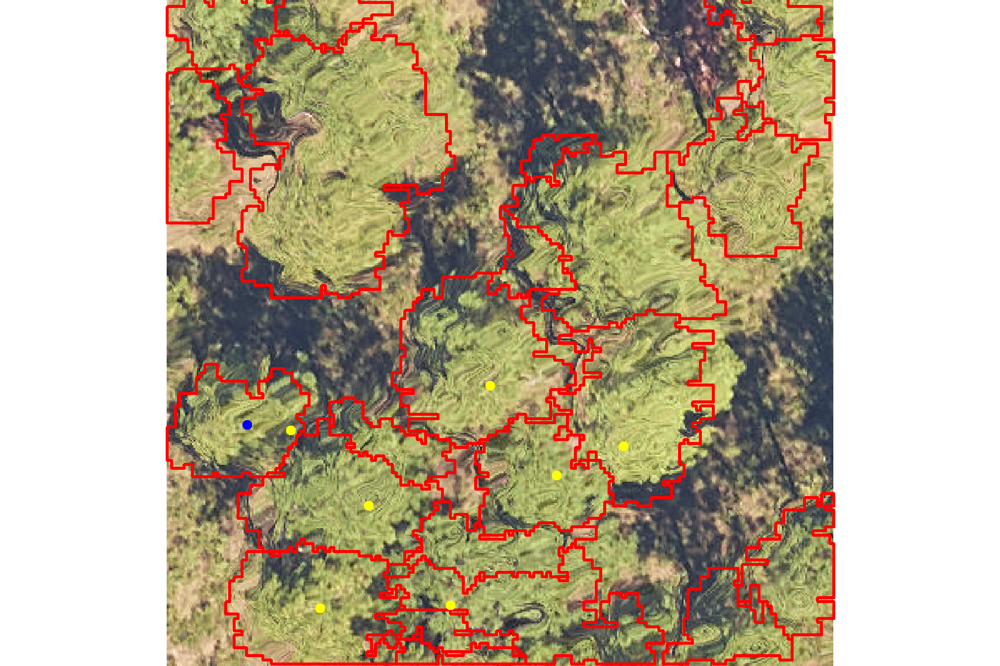

Section 5 Height to Maximum Diameter Process
In this section we’ll use the benchmark data made available in the NeonTreeEvaluation data set (Weinstein et al. 2021) to test a process for extracting the height of the maximum canopy diameter (HMD) using point cloud data. Our process will use individual trees and tree crowns detected from the point cloud, find the maximum width of point within the individual tree point cloud, and extract the height of those points. In short, we will determine HMD can by analyzing the vertical profile of the tree crown and identifying the height at which the crown diameter is maximum. The ultimate goal is to incorporate this process in the cloud2trees package (Woolsey and Tinkham, 2024).
An early version of this process was developed by Andrew Sanchez Meador.
First, load the standard libraries
# bread-and-butter
library(tidyverse) # the tidyverse
library(viridis) # viridis colors
library(harrypotter) # hp colors
library(RColorBrewer) # brewer colors
library(scales) # work with number and plot scales
library(latex2exp)
# visualization
library(mapview) # interactive html maps
library(kableExtra) # tables
library(patchwork) # combine plots
library(ggnewscale) # ggnewscale
library(rgl) # rgl plotting
# spatial analysis
library(terra) # raster
library(sf) # simple features
library(lidR) # lidar data
library(cloud2trees) # tha cloud2trees
library(NeonTreeEvaluation) # benchmark data5.1 Example Lidar Data
Let’s load an example lidar dataset from Weinstein et al. (2021) in their NeonTreeEvaluation package.
We’ll use data from a NEON site that we know has conifers: RMNP (Rocky Mountain National Park)
# let's see some field trees data
NeonTreeEvaluation::field %>%
dplyr::filter(siteID == "RMNP") %>%
dplyr::count(taxonID) %>%
dplyr::arrange(desc(n))## taxonID n
## 1 PICOL 773
## 2 POTR5 292
## 3 PIPOS 91
## 4 PSME 89
## 5 ABLAL 57
## 6 PIEN 39
## 7 PIFL2 34let’s pick a site with the lowest proportion of POTR5
plots_temp <- NeonTreeEvaluation::field %>%
dplyr::filter(siteID == "RMNP") %>%
dplyr::group_by(plotID) %>%
dplyr::summarise(
trees = dplyr::n()
, conifers = sum(ifelse(taxonID=="POTR5", 0, 1))
) %>%
dplyr::mutate(pct_conifer = conifers/trees) %>%
dplyr::filter(trees>20) %>%
dplyr::arrange(desc(pct_conifer), desc(trees))
plots_temp## # A tibble: 20 × 4
## plotID trees conifers pct_conifer
## <fct> <int> <dbl> <dbl>
## 1 RMNP_042 111 111 1
## 2 RMNP_043 104 104 1
## 3 RMNP_047 59 59 1
## 4 RMNP_008 50 50 1
## 5 RMNP_048 50 50 1
## 6 RMNP_001 41 41 1
## 7 RMNP_006 39 39 1
## 8 RMNP_014 36 36 1
## 9 RMNP_012 35 35 1
## 10 RMNP_003 30 30 1
## 11 RMNP_018 29 29 1
## 12 RMNP_005 24 24 1
## 13 RMNP_002 21 21 1
## 14 RMNP_041 131 128 0.977
## 15 RMNP_004 27 26 0.963
## 16 RMNP_049 36 34 0.944
## 17 RMNP_007 30 24 0.8
## 18 RMNP_044 111 68 0.613
## 19 RMNP_045 229 57 0.249
## 20 RMNP_046 73 13 0.178get the lidar data
# get the laz file path
las_f_path_temp <- paste0(system.file(package = "NeonTreeEvaluation"),"/extdata/") %>%
list.files(recursive = T, pattern = ".*\\.(laz|las)$", full.names = T) %>%
unique() %>%
dplyr::as_tibble() %>%
dplyr::rename(f_path = 1) %>%
dplyr::filter(
stringr::str_detect(f_path, as.character(plots_temp[1,]$plotID))
) %>%
.[1] %>% # pulls the plot with the highest conifer proportion
dplyr::pull(f_path)
# check the data
lidR::readLAS(las_f_path_temp)## class : LAS (v1.3 format 1)
## memory : 1.2 Mb
## extent : 453532.6, 453572.6, 4458556, 4458596 (xmin, xmax, ymin, ymax)
## coord. ref. : WGS 84 / UTM zone 13N
## area : 1653 m²
## points : 20.4 thousand points
## density : 12.35 points/m²
## density : 7.63 pulses/m²5.1.1 cloud2trees that lidar data
extract trees from the lidar data using cloud2trees
we do not need to get DBH or CBH for this testing
# save our output_dir
od <- tempdir()
# cloud2trees
cloud2trees_ans <- cloud2trees::cloud2trees(
input_las_dir = las_f_path_temp
, output_dir = od
, keep_intrmdt = T
)let’s see what we got
## Rows: 107
## Columns: 25
## $ treeID <chr> "1_453532.6_4458594.6", "2_453544.6_4458594.…
## $ tree_height_m <dbl> 3.185, 12.866, 11.826, 4.287, 8.980, 7.009, …
## $ crown_area_m2 <dbl> 0.8750, 10.0000, 11.0625, 0.5625, 5.1875, 1.…
## $ fia_est_dbh_cm <dbl> NA, NA, NA, NA, NA, NA, NA, NA, NA, NA, NA, …
## $ fia_est_dbh_cm_lower <dbl> NA, NA, NA, NA, NA, NA, NA, NA, NA, NA, NA, …
## $ fia_est_dbh_cm_upper <dbl> NA, NA, NA, NA, NA, NA, NA, NA, NA, NA, NA, …
## $ dbh_cm <dbl> NA, NA, NA, NA, NA, NA, NA, NA, NA, NA, NA, …
## $ is_training_data <lgl> NA, NA, NA, NA, NA, NA, NA, NA, NA, NA, NA, …
## $ dbh_m <dbl> NA, NA, NA, NA, NA, NA, NA, NA, NA, NA, NA, …
## $ radius_m <dbl> NA, NA, NA, NA, NA, NA, NA, NA, NA, NA, NA, …
## $ basal_area_m2 <dbl> NA, NA, NA, NA, NA, NA, NA, NA, NA, NA, NA, …
## $ basal_area_ft2 <dbl> NA, NA, NA, NA, NA, NA, NA, NA, NA, NA, NA, …
## $ ptcld_extracted_dbh_cm <dbl> NA, NA, NA, NA, NA, NA, NA, NA, NA, NA, NA, …
## $ ptcld_predicted_dbh_cm <dbl> NA, NA, NA, NA, NA, NA, NA, NA, NA, NA, NA, …
## $ tree_cbh_m <dbl> NA, NA, NA, NA, NA, NA, NA, NA, NA, NA, NA, …
## $ is_training_cbh <lgl> NA, NA, NA, NA, NA, NA, NA, NA, NA, NA, NA, …
## $ forest_type_group_code <chr> NA, NA, NA, NA, NA, NA, NA, NA, NA, NA, NA, …
## $ forest_type_group <chr> NA, NA, NA, NA, NA, NA, NA, NA, NA, NA, NA, …
## $ hardwood_softwood <chr> NA, NA, NA, NA, NA, NA, NA, NA, NA, NA, NA, …
## $ comp_trees_per_ha <dbl> NA, NA, NA, NA, NA, NA, NA, NA, NA, NA, NA, …
## $ comp_relative_tree_height <dbl> NA, NA, NA, NA, NA, NA, NA, NA, NA, NA, NA, …
## $ comp_dist_to_nearest_m <dbl> NA, NA, NA, NA, NA, NA, NA, NA, NA, NA, NA, …
## $ max_crown_diam_height_m <dbl> NA, NA, NA, NA, NA, NA, NA, NA, NA, NA, NA, …
## $ is_training_hmd <lgl> NA, NA, NA, NA, NA, NA, NA, NA, NA, NA, NA, …
## $ geometry <POINT [m]> POINT (453532.6 4458595), POINT (45354…where is this?
zoom out if you can’t see anything
5.2 Height to Max Crown Diameter
The height of the maximum crown diameter (HMD) can be determined by analyzing the vertical profile of the tree crown and identifying the height at which the crown diameter is maximum. This can be achieved using techniques like profile analysis or by fitting parametric models to the crown shape. We’ll use a simplified technique developed by Andrew Sanchez Meador
5.2.1 One Tree Example
First, let’s use our normalized point cloud for one tree which was dropped off in the output directory from the cloud2trees::cloud2trees() function (see that output_dir parameter).
(n_f_temp <- list.files(
file.path(od, "point_cloud_processing_temp", "02_normalize")
, pattern = "(.las|.laz)"
, full.names = T
))## [1] "C:\\Users\\georg\\AppData\\Local\\Temp\\Rtmp2B1UrB/point_cloud_processing_temp/02_normalize/RMNP_042_2018_normalize.las"# read in the lascatalog
nlas_ctg <- lidR::readLAScatalog(n_f_temp)
# we can set the options for reading from the catalog up-front
lidR::opt_progress(nlas_ctg) <- F
lidR::opt_filter(nlas_ctg) <- "-drop_duplicates -drop_class 2 9 18" ## class 2 = ground; 9 = water; 18 = noise
lidR::opt_select(nlas_ctg) <- "xyz"
# is there a treeID column?
nlas_ctg@data %>% names() %>% stringr::str_detect("treeID") %>% max() %>% as.logical()## [1] FALSEclip the point cloud to one tree crown polygon
# get id of tallest tree
id <- cloud2trees_ans$crowns_sf %>% dplyr::arrange(desc(tree_height_m)) %>% dplyr::slice_head(n=1) %>% dplyr::pull(treeID)
# keep only the one tree polygon
one_tree_sf <- cloud2trees_ans$crowns_sf %>% dplyr::filter(treeID==id)
# flter the point cloud and add the treeID
nlas_one_tree <- lidR::clip_roi(las = nlas_ctg, geometry = one_tree_sf) %>%
lidR::add_attribute(x = id, name = "treeID")plot the individual tree point cloud
# plot it
plot3D::scatter3D(
x = nlas_one_tree@data$X
, y = nlas_one_tree@data$Y
, z = nlas_one_tree@data$Z
, colvar = nlas_one_tree@data$Z
, cex = 0.3, pch = 19
, colkey = T
, phi = -6
, col = harrypotter::hp(n=50, house = "gryffindor")
)
Walk through an example to get the height to maximum crown diameter (HMD) using the process developed by Andrew Sanchez Meador
# inputs
z <- nlas_one_tree$Z
x <- nlas_one_tree$X
y <- nlas_one_tree$Y
# find the highest point in the tree as the tree "center"
highest_pt_index <- base::which.max(z)
xcenter <- x[highest_pt_index]
ycenter <- y[highest_pt_index]
# Calculate the convex hull of the crown points
hull_indices <- grDevices::chull(x, y)
hull_x <- x[hull_indices]
hull_y <- y[hull_indices]
# Calculate the distances from the center to the hull points
distances <- sqrt((hull_x - xcenter)^2 + (hull_y - ycenter)^2)
# the index of the hull point with the max dist in the hull data
max_dist_hull_index <- base::which.max(distances)
# the index of the hull point with the max dist in the full data
max_dist_dta_index <- hull_indices[max_dist_hull_index]
# the corresponding height of the hull point with the max dist
max_crown_diameter_height <- z[max_dist_dta_index]let’s plot all of that in 2-D space as if we are looking down at the tree from above
ggplot(data = nlas_one_tree@data, mapping = aes(x=X, y=Y, color=Z)) +
# draw the convex hull first
geom_polygon(
data = nlas_one_tree@data %>% dplyr::slice(hull_indices)
, fill = NA
, color = "gray"
, lwd = 1.5
) +
# the points colored by height Z
geom_point(mapping = aes(color=Z)) +
# draw the tree "center" point
geom_point(
data = nlas_one_tree@data %>% dplyr::slice(highest_pt_index)
, mapping = aes(shape = "tree center")
# , shape = 0
, color = "black", size = 3
) +
# draw the hull point with the max distance
geom_point(
data = nlas_one_tree@data %>% dplyr::slice(max_dist_dta_index)
, mapping = aes(
shape = "farthest point\nfrom center"
)
# , shape = 0
, color = "black", size = 3
) +
harrypotter::scale_color_hp("gryffindor", name = "Z (ht m)") +
scale_shape_manual(values = c(0, 2), name = "") +
labs(
title = "single tree point cloud HMD process"
, caption = paste0(
"HMD = ", round(max_crown_diameter_height,1), " m"
, "\n(ht of point farthest from center)"
)
) +
theme_light() +
theme(axis.text = element_blank())let’s make a tidy data process using the data frame of the point cloud grouped by treeID
pts_temp <- nlas_one_tree@data %>%
dplyr::rename_with(.cols = -c(treeID), .fn = tolower) %>%
dplyr::group_by(treeID) %>% # this is key
dplyr::mutate(
# find the highest point in the tree as the tree "center"
is_tree_center = z==max(z)
, tree_center_x = dplyr::first(ifelse(is_tree_center, x, NA), na_rm = T) # first in case many points are center
, tree_center_y = dplyr::first(ifelse(is_tree_center, y, NA), na_rm = T) # first in case many points are center
# Calculate the distance from the center to the point
, dist_to_center = sqrt((x - tree_center_x)^2 + (y - tree_center_y)^2)
, is_max_dist_to_center = dist_to_center == max(dist_to_center)
# classify points for plotting
, grp_pt = dplyr::case_when(
is_tree_center ~ 0
, is_max_dist_to_center ~ 1
, T ~ 2
) %>%
factor(
ordered = T
, levels = 0:2
, labels = c("tree center", "farthest point\nfrom center", "other")
)
) %>%
dplyr::ungroup()let’s plot all of that in 2-D space as if we are looking down at the tree from above
# plot
ggplot(data = pts_temp, mapping = aes(x=x,y=y,color=z, shape = grp_pt)) +
geom_point(
mapping = aes(
size = ifelse(is_tree_center | is_max_dist_to_center, 1.5, 1)
)
) +
harrypotter::scale_color_hp("gryffindor", name = "Z (ht m)") +
scale_shape_manual(values = c(17, 15, 16), name = "") +
labs(
title = "single tree point cloud HMD process"
, caption = paste0(
"HMD = "
, round(
pts_temp %>%
dplyr::filter(is_max_dist_to_center) %>%
dplyr::slice_head(n=1) %>%
dplyr::pull(z)
, 1
)
, " m"
, "\n(ht of point farthest from center)"
)
) +
theme_light() +
theme(axis.text = element_blank()) +
guides(size = "none")
let’s make a function to ingest LAS class data or a data frame with x, y, z and treeID columns and return the data aggregated to the tree level with the HMD value. We will cut out all of the columns we used specifically for plotting and use dplyr::summarise() to aggregate to the tree level in the function (process not shown above).
calc_tree_hmd <- function(las, id=NULL) {
#######################
# check data type
#######################
las_msg <- paste0(
"`las` must contain a data frame -or- an object of class `LAS`"
, "\nPlease update the `las` parameter."
)
# check
if(inherits(las, "LAS")){
dta <- las@data
}else if(inherits(las,"data.frame")){
dta <- las
}else{stop(las_msg)}
#######################
# check columns
#######################
# overwrite treeID if id is filled
if(!is.null(id)){
dta <- dta %>% dplyr::mutate(treeID = id)
}
# names
nms <- names(dta) %>% dplyr::coalesce("")
# check for treeID column
if(
max(stringr::str_equal(nms, "treeID"))==0
){
stop("the `las` data does not contain the column `treeID`, ensure this column exists or set the `id` parameter")
}
# check for xyz
has_xyz <- c("x", "y", "z") %>%
purrr::map(function(x){
stringr::str_equal(tolower(nms), x) %>%
max() # do any columns match, T=1
}) %>%
unlist() %>%
min()
if(has_xyz==0){
stop("the `las` data does not contain the columns `x`, `y`, and `z`, ensure columns exist")
}
#######################
# find the center and farthest point
#######################
# classify points
pts_temp <- dta %>%
dplyr::rename_with(.cols = -c(treeID), .fn = tolower) %>%
dplyr::mutate(dplyr::across(
.cols = c(x,y,z)
, .fns = as.numeric
)) %>%
dplyr::filter(!is.na(x) & !is.na(y) & !is.na(z)) %>%
dplyr::group_by(treeID) %>% # this is key
# first, let's arrange the points by distance from x,y center
dplyr::mutate(
x_mean = mean(x, na.rm = T)
, y_mean = mean(y, na.rm = T)
, dist_mean = sqrt((x - x_mean)^2 + (y - y_mean)^2)
) %>%
# now find the point farthest from the tree center as defined by the max z point
dplyr::mutate(
# find the highest point in the tree as the tree "center"
max_z = max(z, na.rm = T)
, is_tree_center = z==max_z
# first in case many points have max z
, tree_center_x = dplyr::first(
ifelse(is_tree_center, x, NA)
, order_by = dist_mean # tie breaker is point closest to xy center
, na_rm = T
)
# first in case many points have max z
, tree_center_y = dplyr::first(
ifelse(is_tree_center, y, NA)
, order_by = dist_mean # tie breaker is point closest to xy center
, na_rm = T
)
# Calculate the distance from the center to the point
, dist_to_center = sqrt((x - tree_center_x)^2 + (y - tree_center_y)^2)
, is_max_dist_to_center = dist_to_center == max(dist_to_center)
, n_pts = dplyr::n()
) %>%
dplyr::ungroup()
# aggregate to treeID level
df_r <- pts_temp %>%
dplyr::filter(is_max_dist_to_center) %>%
dplyr::group_by(treeID) %>%
# min to be conservative for fire models
# "conservative" = fire models will say that fire is "worse" than could be
dplyr::summarise(
calc_tree_hmd_max_z = dplyr::first(max_z, na_rm = T) # already aggregated, could go in group_by
, calc_tree_hmd_n_pts = dplyr::first(n_pts, na_rm = T) # already aggregated, could go in group_by
, max_crown_diam_height_m = min(z, na.rm = T)
) %>%
dplyr::ungroup()
# ensure that max_crown_diam_height_m<=max_z
# return
return(df_r)
}test this function
## # A tibble: 1 × 4
## treeID calc_tree_hmd_max_z calc_tree_hmd_n_pts max_crown_diam_heigh…¹
## <chr> <dbl> <int> <dbl>
## 1 59_453549.9_44… 16.0 469 5.48
## # ℹ abbreviated name: ¹max_crown_diam_height_mlooks good.
5.2.2 Process for entire LAScatalog
now the challenge is attaching treeID to the normalized point cloud if we assume that we are starting with tree crown polygons and normalized point clouds (i.e. a “LAScatalog”) without tree classification. which process is going to be most efficient planning for data sets with thousands (hundreds of thousands?) of trees and BIG DATA point cloud data?
{kind=link}
check our LAScatalog
## class : LAScatalog (v1.2 format 1)
## extent : 453532.6, 453572.6, 4458556, 4458596 (xmin, xmax, ymin, ymax)
## coord. ref. : UTM Zone 13N Geoid12A
## area : 1599.8 m²
## points : 20.4 thousand points
## density : 12.7 points/m²
## density : 7.9 pulses/m²
## num. files : 15.2.2.1 Filter the LAScatalog one tree at a time
the first option is to filter the LAScatalog one tree crown at a time and apply the calc_tree_hmd() function one tree at a time
## function to clip the point cloud to a polygon and run it through the `calc_tree_hmd()` function we defined above
## not going to add all the data checks to this function because it will be internal
call_calc_tree_hmd <- function(
id
, poly_df
, nlas
){
##################################
# filter sf
##################################
one_tree_sf <- poly_df %>% dplyr::filter(treeID==id)
##################################
# clip the point cloud
##################################
nlas_one_tree <- lidR::clip_roi(las = nlas, geometry = one_tree_sf) %>%
lidR::add_attribute(x = id, name = "treeID")
##################################
# check for points
##################################
if(nrow(nlas_one_tree@data)>2){
# CALL calc_tree_hmd
calc_tree_hmd_ans <- calc_tree_hmd(las = nlas_one_tree)
}else{ # < 10 points
calc_tree_hmd_ans <- NULL
}
# build return data
if(is.null(calc_tree_hmd_ans)){
# blank the cbh columns
df <- one_tree_sf %>%
dplyr::mutate(
max_crown_diam_height_m = as.numeric(NA)
)
}else{
df <- one_tree_sf %>%
dplyr::mutate(
max_crown_diam_height_m = calc_tree_hmd_ans$max_crown_diam_height_m[1]
)
}
return(df)
}let’s apply this intermediate call_calc_tree_hmd() function for a spin
# try it
st_temp <- Sys.time()
hmd_df <- cloud2trees_ans$crowns_sf$treeID %>%
unique() %>%
purrr::map(\(x) call_calc_tree_hmd(
id = x
, poly_df = cloud2trees_ans$crowns_sf
, nlas = nlas_ctg
)
, .progress = "extracting HMD"
) %>%
dplyr::bind_rows() %>%
sf::st_drop_geometry()
timer_mins <- difftime(Sys.time(), st_temp, units = "mins") %>% as.numeric()what did we get?
## Rows: 107
## Columns: 25
## $ treeID <chr> "1_453532.6_4458594.6", "2_453544.6_4458594.…
## $ tree_height_m <dbl> 3.185, 12.866, 11.826, 4.287, 8.980, 7.009, …
## $ tree_x <dbl> 453532.6, 453544.6, 453542.6, 453547.4, 4535…
## $ tree_y <dbl> 4458595, 4458595, 4458594, 4458593, 4458592,…
## $ crown_area_m2 <dbl> 0.8750, 10.0000, 11.0625, 0.5625, 5.1875, 1.…
## $ fia_est_dbh_cm <dbl> NA, NA, NA, NA, NA, NA, NA, NA, NA, NA, NA, …
## $ fia_est_dbh_cm_lower <dbl> NA, NA, NA, NA, NA, NA, NA, NA, NA, NA, NA, …
## $ fia_est_dbh_cm_upper <dbl> NA, NA, NA, NA, NA, NA, NA, NA, NA, NA, NA, …
## $ dbh_cm <dbl> NA, NA, NA, NA, NA, NA, NA, NA, NA, NA, NA, …
## $ is_training_data <lgl> NA, NA, NA, NA, NA, NA, NA, NA, NA, NA, NA, …
## $ dbh_m <dbl> NA, NA, NA, NA, NA, NA, NA, NA, NA, NA, NA, …
## $ radius_m <dbl> NA, NA, NA, NA, NA, NA, NA, NA, NA, NA, NA, …
## $ basal_area_m2 <dbl> NA, NA, NA, NA, NA, NA, NA, NA, NA, NA, NA, …
## $ basal_area_ft2 <dbl> NA, NA, NA, NA, NA, NA, NA, NA, NA, NA, NA, …
## $ ptcld_extracted_dbh_cm <dbl> NA, NA, NA, NA, NA, NA, NA, NA, NA, NA, NA, …
## $ ptcld_predicted_dbh_cm <dbl> NA, NA, NA, NA, NA, NA, NA, NA, NA, NA, NA, …
## $ tree_cbh_m <dbl> NA, NA, NA, NA, NA, NA, NA, NA, NA, NA, NA, …
## $ is_training_cbh <lgl> NA, NA, NA, NA, NA, NA, NA, NA, NA, NA, NA, …
## $ forest_type_group_code <chr> NA, NA, NA, NA, NA, NA, NA, NA, NA, NA, NA, …
## $ forest_type_group <chr> NA, NA, NA, NA, NA, NA, NA, NA, NA, NA, NA, …
## $ hardwood_softwood <chr> NA, NA, NA, NA, NA, NA, NA, NA, NA, NA, NA, …
## $ comp_trees_per_ha <dbl> NA, NA, NA, NA, NA, NA, NA, NA, NA, NA, NA, …
## $ comp_relative_tree_height <dbl> NA, NA, NA, NA, NA, NA, NA, NA, NA, NA, NA, …
## $ comp_dist_to_nearest_m <dbl> NA, NA, NA, NA, NA, NA, NA, NA, NA, NA, NA, …
## $ max_crown_diam_height_m <dbl> 2.870, 4.779, 5.819, 3.767, 6.375, 3.000, 5.…let’s check the max_crown_diam_height_m column which has the HMD value
## Min. 1st Qu. Median Mean 3rd Qu. Max. NA's
## 0.637 3.582 4.616 4.806 5.819 9.668 10notice that there are missing values since we required there to be at least three points in the tree point cloud to calculate HMD. we will need to deal with these missing values when implementing in cloud2trees by using this “training data” to model the missing values based on tree height and spatial location
let’s plot the max_crown_diam_height_m column which has the HMD value
p1_temp <- ggplot(data = hmd_df, mapping = aes(x = tree_height_m, y = max_crown_diam_height_m)) +
geom_point() +
labs(title = "HMD vs. Tree Height", x = "tree ht (m)", y = "HMD (m)") +
theme_light()
p2_temp <- ggplot(data = hmd_df, mapping = aes(x = crown_area_m2, y = max_crown_diam_height_m)) +
geom_point() +
labs(title = "HMD vs. Tree Crown Area", x = "crown area (m2)", y = "HMD (m)") +
theme_light()
# patchwork
p1_temp+p2_temp
did you notice we timed the process to calculate HMD? Filtering the point cloud and extracting HMD one tree at a time took 0.95 minutes for this data set with 107 trees
5.2.2.2 Attach treeID attribute to the LAScatalog
the second option is to attach the treeID column to the point cloud in the LAScatalog and apply the calc_tree_hmd() function to all trees at one time. the challenge with this option is that one tree could be spread across multiple las “tiles” and we would need to account for this to ensure trees are not duplicated and are not missing points
first, we’ll define the function simplify_multipolygon_crowns() to simplify MULTIPOLYGON to POLYGON geometry in an sf class object as the function we’ll use to attach treeID to the point cloud, lidR::merge_spatial(), requires only POLYGON data
simplify_multipolygon_crowns <- function(trees_poly) {
if(!inherits(trees_poly, "sf")){
stop("must pass an sf object to the `trees_poly` parameter")
}
# check if not polygon
if( min(sf::st_is(trees_poly, type = c("POLYGON", "MULTIPOLYGON"))) == 0 ){
warning(paste0(
"data passed to `trees_poly` is not polygon or multipolygon data"
, "\n see sf::st_geometry_type...returning original data"
))
return(trees_poly)
}
# return data as-is if no multipolygon
if( max(sf::st_is(trees_poly, type = c("MULTIPOLYGON"))) == 0 ){
return(trees_poly)
}
# check if has a treeID
if(
(names(trees_poly) %>% stringr::str_detect("treeID") %>% max())==0
){
stop(paste0(
"`trees_poly` data must contain `treeID` column."
, "\nProvide the `treeID` as a unique identifier of individual trees."
))
}
# simplify the multipolygons
df <-
# start with only polygons
trees_poly %>%
dplyr::filter(sf::st_geometry_type(.)=="POLYGON") %>%
# union on cleaned multipolygons
dplyr::bind_rows(
trees_poly %>%
dplyr::filter(sf::st_geometry_type(.)=="MULTIPOLYGON") %>%
sf::st_cast(to = "POLYGON", do_split = T, warn = F) %>%
dplyr::mutate(axxx = sf::st_area(.)) %>% # axxx is so we don't overwrite a column
dplyr::group_by(treeID) %>%
dplyr::filter(axxx == max(axxx)) %>% # keep the biggest crown polygon by treeID
dplyr::ungroup() %>%
dplyr::select(-axxx)
) %>%
dplyr::ungroup()
# return
return(df)
}now we’ll define a function to apply the calc_tree_hmd() function to the catalog chunks
ctg_calc_tree_hmd <- function(chunk, poly_df, force_crs = F){
las <- lidR::readLAS(chunk)
if (lidR::is.empty(las)) return(NULL)
# make sure same crs
if(
force_crs &&
!identical(lidR::st_crs(las), sf::st_crs(poly_df))
){
lidR::st_crs(las) <- sf::st_crs(poly_df)
}else if(!identical(lidR::st_crs(las), sf::st_crs(poly_df))){
stop(paste0(
"lidR::st_crs(las) != sf::st_crs(poly_df) ensure data are same projection -or-"
, "\nturn on the force same crs parameter if confident that data are in same projection"
))
}
# attach treeID
nlas_tree <- lidR::merge_spatial(
las = las
, source = poly_df
, attribute = "treeID"
)
# calc_tree_hmd()
df <- calc_tree_hmd(nlas_tree)
# return
# return(nlas_tree)
return(df)
}set the processing options and call it
# set the lascatalog options
lidR::opt_progress(nlas_ctg) <- F
lidR::opt_filter(nlas_ctg) <- "-drop_duplicates -drop_class 2 9 18" ## class 2 = ground; 9 = water; 18 = noise
lidR::opt_select(nlas_ctg) <- "xyz"
lidR::opt_output_files(nlas_ctg) <- paste0(tempdir(), "/{*}_treed")
st_temp <- Sys.time()
# apply the ctg_calc_tree_hmd function
output_temp <- lidR::catalog_apply(
ctg = nlas_ctg
, FUN = ctg_calc_tree_hmd
, .options = list(automerge = TRUE)
# ctg_calc_tree_hmd options
, poly_df = cloud2trees::simplify_multipolygon_crowns(cloud2trees_ans$crowns_sf)
, force_crs = T
)
timer_mins2 <- difftime(Sys.time(), st_temp, units = "mins") %>% as.numeric()what did we get back?
## [1] "C:\\Users\\georg\\AppData\\Local\\Temp\\Rtmp2B1UrB/RMNP_042_2018_normalize_treed.txt"lidR::catalog_apply() saved the output to .txt file(s)…let’s open up this present
hmd_df2 <- output_temp %>%
purrr::map(\(x) readr::read_delim(
file = x, progress = F, show_col_types = F
)) %>%
dplyr::bind_rows() %>%
# for trees on many tiles keep row with most points
dplyr::group_by(treeID) %>%
dplyr::filter(calc_tree_hmd_n_pts == max(calc_tree_hmd_n_pts)) %>%
dplyr::summarise(
calc_tree_hmd_n_pts = max(calc_tree_hmd_n_pts, na.rm = T)
, calc_tree_hmd_max_z = max(calc_tree_hmd_max_z, na.rm = T)
# favor lower hmd if still duplicates
, max_crown_diam_height_m = min(max_crown_diam_height_m, na.rm = T)
) %>%
dplyr::ungroup()
# check it
hmd_df2 %>% dplyr::glimpse()## Rows: 108
## Columns: 4
## $ treeID <chr> "100_453547.9_4458557.6", "101_453550.1_445855…
## $ calc_tree_hmd_n_pts <dbl> 3, 135, 111, 186, 22, 79, 95, 18, 11, 6, 125, …
## $ calc_tree_hmd_max_z <dbl> 4.983, 13.855, 12.000, 11.841, 7.656, 11.569, …
## $ max_crown_diam_height_m <dbl> 4.959, 7.777, 6.369, 5.390, 3.583, 7.862, 2.85…let’s join this back to our original data and NA the values where a tree had less than 3 points
hmd_df2 <- cloud2trees_ans$crowns_sf %>%
dplyr::left_join(
hmd_df2 %>%
dplyr::mutate(
max_crown_diam_height_m = ifelse(calc_tree_hmd_n_pts<3, as.numeric(NA), max_crown_diam_height_m)
) %>%
dplyr::select(-calc_tree_hmd_n_pts)
, by = "treeID"
)let’s make the same scatter plots as above and plot the max_crown_diam_height_m column which has the HMD value
p1_temp <- ggplot(data = hmd_df2, mapping = aes(x = tree_height_m, y = max_crown_diam_height_m)) +
geom_point() +
labs(title = "HMD vs. Tree Height", x = "tree ht (m)", y = "HMD (m)") +
theme_light()
p2_temp <- ggplot(data = hmd_df2, mapping = aes(x = crown_area_m2, y = max_crown_diam_height_m)) +
geom_point() +
labs(title = "HMD vs. Tree Crown Area", x = "crown area (m2)", y = "HMD (m)") +
theme_light()
# patchwork
p1_temp+p2_temp
to this point there is nothing in our HMD estimation process that ensures that the tree height is not below the HMD. we should implement a check and force height>=HMD.
let’s check for records where height<HMD
# check the height real quick
hmd_df2 %>%
sf::st_drop_geometry() %>%
dplyr::filter(!is.na(max_crown_diam_height_m)) %>%
dplyr::mutate(ht_lt_hmd = tree_height_m<max_crown_diam_height_m) %>%
dplyr::count(ht_lt_hmd)## # A tibble: 1 × 2
## ht_lt_hmd n
## <lgl> <int>
## 1 FALSE 97did you notice we timed the process to calculate HMD? Filtering the point cloud and extracting HMD one tree at a time took 0.95 minutes for this data set with 107 trees…by comparison, the LAScatalog approach took 0.01…the winner is clear.
5.3 Function for cloud2trees
the function will take an input normalized las catalog and tree crown polygons and return the tree list with the HMD value
#### intermediate functions are
# calc_tree_hmd
# ctg_calc_tree_hmd
trees_hmd <- function(
trees_poly
, norm_las = NULL
, estimate_missing_hmd = F
, force_same_crs = F
){
# could move to parameters
force_hmd_lte_ht = T
##################################
# ensure that norm las data exists
##################################
nlas_msg <- paste0(
"`norm_las` must contain a directory with nomalized las files, the path of a .laz|.las file"
, "\n, -or- an object of class `LASc`. Please update the `norm_las` parameter."
)
if(is.null(norm_las)){stop(nlas_msg)}
if(inherits(norm_las, "character")){
if(!stringr::str_ends(norm_las, ".*\\.(laz|las)$")){
# try to read directory for las files
fls <- list.files(normalizePath(norm_las), pattern = ".*\\.(laz|las)$", full.names = TRUE)
# stop it if no files
if(length(fls)<1){stop(nlas_msg)}
# read it
nlas_ctg <- lidR::readLAScatalog(fls)
}else if(stringr::str_ends(norm_las, ".*\\.(laz|las)$")){
# read it
nlas_ctg <- lidR::readLAScatalog(norm_las)
}else{
stop(nlas_msg)
}
}else if(inherits(nlas_ctg, "LAScatalog")){
nlas_ctg <- norm_las
}else{
stop(nlas_msg)
}
# set the lascatalog options
lidR::opt_progress(nlas_ctg) <- F
lidR::opt_filter(nlas_ctg) <- "-drop_duplicates -drop_class 2 9 18" ## class 2 = ground; 9 = water; 18 = noise
lidR::opt_select(nlas_ctg) <- "xyz"
lidR::opt_output_files(nlas_ctg) <- paste0(tempdir(), "/{*}_treed")
##################################
# ensure spatial polygon data
##################################
sf_msg <- paste0(
"`trees_poly` data must be an object of class `sf` with only POLYGON type."
, "\nProvide an `sf` object and see `sf::st_geometry_type()`."
)
if(!inherits(trees_poly, "sf")){stop(sf_msg)}
if( min(sf::st_is(trees_poly, type = c("POLYGON", "MULTIPOLYGON"))) == 0 ){stop(sf_msg)}
##################################
# ensure that treeID data exists
##################################
f <- trees_poly %>% names()
if(length(f)==0){f <- ""}
if(
max(grepl("treeID", f))==0
){
stop(paste0(
"`trees_poly` data must contain `treeID` column to estimate HMD."
, "\nProvide the `treeID` as a unique identifier of individual trees."
))
}else{
# check for duplicate treeID
if(
nrow(trees_poly) != length(unique(trees_poly$treeID))
){
stop("Duplicates found in the treeID column. Please remove duplicates and try again.")
}
}
# check for tree_height_m
if(
max(grepl("tree_height_m", f))==0
){
stop(paste0(
"`trees_poly` data must contain `tree_height_m` column to estimate HMD."
, "\nRename the height column if it exists and ensure it is in meters."
))
}
# get rid of columns we'll create
trees_poly <- trees_poly %>%
# throw in hey_xxxxxxxxxx to test it works if we include non-existant columns
dplyr::select( -dplyr::any_of(c(
"hey_xxxxxxxxxx"
, "max_crown_diam_height_m"
, "is_training_hmd"
)))
##################################
# apply the ctg_calc_tree_hmd function
##################################
# simplify the polygons so that lidR::merge_spatial can be used
simp_trees_poly <- simplify_multipolygon_crowns(trees_poly)
# apply it
output_temp <- lidR::catalog_apply(
ctg = nlas_ctg
, FUN = ctg_calc_tree_hmd
, .options = list(automerge = TRUE)
# ctg_calc_tree_hmd options
, poly_df = simp_trees_poly
, force_crs = force_same_crs
)
##################################
# read result from calc_tree_hmd
##################################
if(
max(stringr::str_ends(output_temp, ".*\\.(txt|csv)$"))==1
){
# read the output file(s)
hmd_df <- stringr::str_subset(output_temp, pattern = ".*\\.(txt|csv)$") %>%
purrr::map(\(x) readr::read_delim(
file = x, progress = F, show_col_types = F
)) %>%
dplyr::bind_rows() %>%
# for trees on many tiles keep row with most points
dplyr::group_by(treeID) %>%
dplyr::filter(calc_tree_hmd_n_pts == max(calc_tree_hmd_n_pts)) %>%
dplyr::summarise(
calc_tree_hmd_n_pts = max(calc_tree_hmd_n_pts, na.rm = T)
, calc_tree_hmd_max_z = max(calc_tree_hmd_max_z, na.rm = T)
# favor lower hmd if still duplicates
, max_crown_diam_height_m = min(max_crown_diam_height_m, na.rm = T)
) %>%
dplyr::ungroup()
# join to original data
trees_poly <- trees_poly %>%
dplyr::left_join(
hmd_df %>%
dplyr::mutate(
max_crown_diam_height_m = ifelse(calc_tree_hmd_n_pts<3, as.numeric(NA), max_crown_diam_height_m)
) %>%
dplyr::select(-tidyselect::starts_with("calc_tree_hmd"))
, by = "treeID"
)
}else{
# blank the hmd column
trees_poly <- trees_poly %>%
dplyr::mutate(
max_crown_diam_height_m = as.numeric(NA)
)
}
# check force_hmd_lte_ht
if(force_hmd_lte_ht==T && max(grepl("tree_height_m", f))==1){
trees_poly <- trees_poly %>%
dplyr::mutate(
max_crown_diam_height_m = dplyr::case_when(
is.na(max_crown_diam_height_m) ~ as.numeric(NA)
, max_crown_diam_height_m > tree_height_m ~ as.numeric(NA)
, T ~ max_crown_diam_height_m
)
)
}
# flag is_training_hmd
trees_poly <- trees_poly %>%
dplyr::mutate(
is_training_hmd = !is.na(max_crown_diam_height_m)
)
# ensure that there are enough data to estimate
n_hmd <- trees_poly %>%
sf::st_drop_geometry() %>%
dplyr::filter(is_training_hmd==T) %>%
nrow()
#######################################################
# estimate_missing_hmd
#######################################################
if(
estimate_missing_hmd==T
&& n_hmd > 10
&& max(grepl("tree_height_m", f))==1
){
# add x,y to data
mod_df <- trees_poly %>%
dplyr::select(treeID, is_training_hmd, tree_height_m, max_crown_diam_height_m) %>%
sf::st_centroid() %>%
dplyr::mutate(
tree_xxx = sf::st_coordinates(.)[,1]
, tree_yyy = sf::st_coordinates(.)[,2]
, tree_height_m = as.numeric(tree_height_m)
, max_crown_diam_height_m = as.numeric(max_crown_diam_height_m)
) %>%
sf::st_drop_geometry()
# training versus predict data
training_df <- mod_df %>% dplyr::filter(is_training_hmd==T) %>% dplyr::select(-is_training_hmd)
predict_df <- mod_df %>% dplyr::filter(is_training_hmd==F) %>% dplyr::select(-is_training_hmd)
### tuning RF model
# If we are interested with just starting out and tuning the mtry parameter
# we can use randomForest::tuneRF for a quick and easy tuning assessment.
# tuneRf will start at a value of mtry that you supply and increase by a
# certain step factor until the OOB error stops improving be a specified amount.
# quiet this
quiet_tuneRF <- purrr::quietly(randomForest::tuneRF)
# run it
rf_tune_temp <- quiet_tuneRF(
# randomForest::tuneRF(
y = training_df$max_crown_diam_height_m
, x = training_df %>% dplyr::select(-c(treeID,max_crown_diam_height_m))
, stepFactor = 0.5
, ntreeTry = 200
, mtryStart = 0.5
, improve = 0.01
, plot = F
, trace = F
)
# just get the result
rf_tune_temp <- rf_tune_temp$result
# Extract the optimal mtry value
optimal_mtry <- rf_tune_temp %>%
dplyr::as_tibble() %>%
dplyr::filter(OOBError==min(OOBError)) %>%
dplyr::filter(dplyr::row_number() == 1) %>%
dplyr::pull(mtry)
# ensure that the mtry value is not greater than the number of predictors
optimal_mtry <- min(
optimal_mtry
, ncol(
training_df %>% dplyr::select(-c(treeID,max_crown_diam_height_m))
)
)
### Run a randomForest model to predict HMD using various crown predictors
# quiet this
quiet_rf <- purrr::quietly(randomForest::randomForest)
# run it
hmd_mod <- quiet_rf(
y = training_df$max_crown_diam_height_m
, x = training_df %>% dplyr::select(-c(treeID,max_crown_diam_height_m))
, mtry = optimal_mtry
, na.action = na.omit
)
# just get the result
hmd_mod <- hmd_mod$result
# # model
# hmd_mod <- stats::lm(
# formula = max_crown_diam_height_m ~ tree_xxx + tree_yyy + tree_xxx:tree_yyy + tree_height_m + crown_area_zzz
# , data = training_df
# )
# predict missing
predicted_hmd_temp <- predict(
hmd_mod
, predict_df %>% dplyr::select(-c(treeID,max_crown_diam_height_m))
) %>%
dplyr::as_tibble() %>%
dplyr::pull(1)
## combine predicted data with training data for full data set
trees_poly <- trees_poly %>%
# join with predicted data estimates
dplyr::left_join(
predict_df %>%
dplyr::mutate(
predicted_hmd = predicted_hmd_temp
) %>%
dplyr::select(treeID, predicted_hmd)
, by = dplyr::join_by("treeID")
) %>%
# clean up data
dplyr::mutate(
max_crown_diam_height_m = dplyr::coalesce(max_crown_diam_height_m, predicted_hmd)
) %>%
dplyr::select(-predicted_hmd)
}else if(estimate_missing_cbh==T){
if(max(grepl("tree_height_m", f))==0){
message(paste0(
"`trees_poly` data must contain `tree_height_m` column to estimate HMD."
, "\nSetting `estimate_missing_hmd=TRUE` requires this data."
, "\nReturning HMD values extracted from cloud only."
))
}else{
message(paste0(
"Insufficient data available to estimate missing HMD values."
, "\nReturning HMD values extracted from cloud only."
))
}
}
## prevent the hmd from being > the tree height
if(force_hmd_lte_ht==T && max(grepl("tree_height_m", f))==1){
# find the 95th percentile of height-cbh ratio
max_ratio <- trees_poly %>%
dplyr::filter(
is_training_hmd==T
& max_crown_diam_height_m < tree_height_m
) %>%
dplyr::mutate(ratio = max_crown_diam_height_m/tree_height_m) %>%
dplyr::pull(ratio) %>%
stats::quantile(probs = 0.95)
# update values
trees_poly <- trees_poly %>%
dplyr::mutate(
# update training data where max_crown_diam_height_m > tree_height_m
is_training_hmd = dplyr::case_when(
is_training_hmd==T & max_crown_diam_height_m > tree_height_m ~ FALSE
, T ~ is_training_hmd
)
# update max_crown_diam_height_m
, max_crown_diam_height_m = dplyr::case_when(
is_training_hmd==F & max_crown_diam_height_m/tree_height_m > max_ratio ~ max_ratio*tree_height_m
, T ~ max_crown_diam_height_m
)
)
}
# return
return(trees_poly)
}test the trees_hmd() function
trees_hmd_ans <- cloud2trees::trees_hmd(
trees_poly = cloud2trees_ans$crowns_sf
, norm_las = nlas_ctg
, estimate_missing_hmd = T
, force_same_crs = T
)what did we get back?
## Rows: 107
## Columns: 27
## $ treeID <chr> "1_453532.6_4458594.6", "2_453544.6_4458594.…
## $ tree_height_m <dbl> 3.185, 12.866, 11.826, 4.287, 8.980, 7.009, …
## $ tree_x <dbl> 453532.6, 453544.6, 453542.6, 453547.4, 4535…
## $ tree_y <dbl> 4458595, 4458595, 4458594, 4458593, 4458592,…
## $ crown_area_m2 <dbl> 0.8750, 10.0000, 11.0625, 0.5625, 5.1875, 1.…
## $ geometry <GEOMETRY [m]> POLYGON ((453532.5 4458595,..., POL…
## $ fia_est_dbh_cm <dbl> NA, NA, NA, NA, NA, NA, NA, NA, NA, NA, NA, …
## $ fia_est_dbh_cm_lower <dbl> NA, NA, NA, NA, NA, NA, NA, NA, NA, NA, NA, …
## $ fia_est_dbh_cm_upper <dbl> NA, NA, NA, NA, NA, NA, NA, NA, NA, NA, NA, …
## $ dbh_cm <dbl> NA, NA, NA, NA, NA, NA, NA, NA, NA, NA, NA, …
## $ is_training_data <lgl> NA, NA, NA, NA, NA, NA, NA, NA, NA, NA, NA, …
## $ dbh_m <dbl> NA, NA, NA, NA, NA, NA, NA, NA, NA, NA, NA, …
## $ radius_m <dbl> NA, NA, NA, NA, NA, NA, NA, NA, NA, NA, NA, …
## $ basal_area_m2 <dbl> NA, NA, NA, NA, NA, NA, NA, NA, NA, NA, NA, …
## $ basal_area_ft2 <dbl> NA, NA, NA, NA, NA, NA, NA, NA, NA, NA, NA, …
## $ ptcld_extracted_dbh_cm <dbl> NA, NA, NA, NA, NA, NA, NA, NA, NA, NA, NA, …
## $ ptcld_predicted_dbh_cm <dbl> NA, NA, NA, NA, NA, NA, NA, NA, NA, NA, NA, …
## $ tree_cbh_m <dbl> NA, NA, NA, NA, NA, NA, NA, NA, NA, NA, NA, …
## $ is_training_cbh <lgl> NA, NA, NA, NA, NA, NA, NA, NA, NA, NA, NA, …
## $ forest_type_group_code <chr> NA, NA, NA, NA, NA, NA, NA, NA, NA, NA, NA, …
## $ forest_type_group <chr> NA, NA, NA, NA, NA, NA, NA, NA, NA, NA, NA, …
## $ hardwood_softwood <chr> NA, NA, NA, NA, NA, NA, NA, NA, NA, NA, NA, …
## $ comp_trees_per_ha <dbl> NA, NA, NA, NA, NA, NA, NA, NA, NA, NA, NA, …
## $ comp_relative_tree_height <dbl> NA, NA, NA, NA, NA, NA, NA, NA, NA, NA, NA, …
## $ comp_dist_to_nearest_m <dbl> NA, NA, NA, NA, NA, NA, NA, NA, NA, NA, NA, …
## $ max_crown_diam_height_m <dbl> 2.870000, 4.779000, 5.819000, 3.767000, 6.37…
## $ is_training_hmd <lgl> TRUE, TRUE, TRUE, TRUE, TRUE, TRUE, TRUE, TR…let’s view the height versus HMD relationship by training data
trees_hmd_ans %>%
ggplot(aes(x = tree_height_m, y = max_crown_diam_height_m, color = is_training_hmd)) +
geom_point(size = 3, alpha = 0.8) +
harrypotter::scale_color_hp_d("ronweasley", direction = -1) +
scale_y_continuous(breaks = scales::breaks_extended(12)) +
scale_x_continuous(breaks = scales::breaks_extended(12)) +
labs(y = "HMD (m)", x = "Height (m)", color = "is training data") +
theme_light() +
theme(legend.position = "top")
check out the HMD spatially
trees_hmd_ans %>%
ggplot(aes(color = is_training_hmd, fill = max_crown_diam_height_m)) +
geom_sf(lwd = 0.8) +
harrypotter::scale_color_hp_d("ronweasley", direction = -1) +
harrypotter::scale_fill_hp("always") +
labs(fill = "HMD (m)", color = "is training data") +
theme_light() +
theme(legend.position = "top", axis.text = element_blank()) +
guides(
color = guide_legend(order = 1, override.aes = list(lwd = 3, fill = NA))
)
let’s put the trees_hmd() function in to cloud2trees